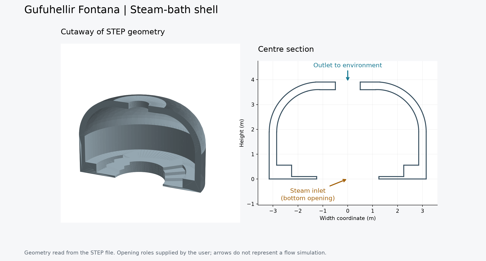

06 / Mechanical · Thermal simulation
Understanding the flow inside a steam bath.
A geometry and simulation study of the Gufuhellir Fontana steam bath, exploring how ventilation arrangements influence the internal thermal environment.

The engineering question
Compare ventilation arrangements within the constraints of the existing steam-bath geometry. The work considers openings, riser configurations, ambient conditions, and temperature distribution through the occupied space.
From CAD to comparison
A STEP model provides the geometric foundation. Python scripts prepare fluid domains and simulation cases, coordinate solver runs, and turn results into temperature profiles and comparison figures.
- Inspect the shell geometry and prepare candidate ventilation designs.
- Compare scenarios with different vent arrangements and operating conditions.
- Compile the geometry, assumptions, figures, and findings into engineering reports.
Interpreting the results
The outputs are design comparisons from a numerical model. Geometry checks, mesh checks, and scenario definitions make the assumptions inspectable; simulated temperatures should be interpreted in that context.